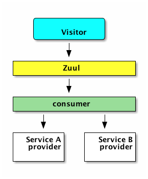

这是Spring Cloud上手系列的第五篇，代码放在GitHub上，随着本系列文章更新。
ZUUL概述
服务网关是微服务中向外部系统提供REST API过程中起服务路由、负载均衡的角色。也可将权限控制等功能放在服务网关上，为微服务提供保护。
SpringCloud Netflix中的Zuul承担了这样的功能。它可以作为Eureka客户端与Eureka集成，实现自动的服务路由。也可以通过配置文件来调整路由的策略，对内部服务提供保护。
使用Zuul的典型场景是这样的：

外部调用通过Zuul调用内部的REST服务，通常情况下内部并不会把所有服务都暴露给外部。上图中的Sercie A/B provider就只是供内部调用的，consumer供外部系统调用的服务。
使用Zuul开发服务网关
在我们的示例中服务网关放在gateway模块中。
依赖配置
gateway模块的build.gradle:
dependencies {
compile libs.'zuul'
compile libs.'eureka-client'
}
jar {
manifest {
attributes "Manifest-Version": 1.0,
'Main-Class': 'com.github.jamsa.sc.gateway.Application'
}
}
从上面可以看出gateway模块也是一个eureka-client模块，它通过eureka查询服务信息，并自动对eureka上注册的服务进行映射。
入口程序
Application类的内容也相当简单:
@SpringBootApplication
@EnableZuulProxy
@EnableEurekaClient
public class Application {
public static void main(String[] args) {
SpringApplication.run(Application.class,args);
}
}
只需要添加@EnableZuulProxy和@EnableEurekaClient注解，基本的服务网关就完成了。
配置信息
再来看看application.yml的内容：
eureka:
instance:
hostname: localhost
client:
serviceUrl:
defaultZone: http://localhost:9001/eureka/
spring:
application:
name: sc-gateway
server:
port: 9000
zuul:
routes:
sc-consumer:
path: /api/**
serviceId: sc-consumer
management:
security:
enabled: false
这里与之前的eureka-client工程并没有不同，只是多了management和zuul段。management段中禁用的安全检查，以便我们能直接通过http://localhost:9000/routes来查看路由信息。由于spring-cloud-starter-zuul已经包含了spring-boot-starter-actuator，它本身具备路由管理能力，只不过默认情况下直接访问/routes会报Unauthorized 401错误。
zuul段的配置信息用于路由规则配置，上面配置文件中的作用是将sc-consumer这个应用映射至http://localhost:9000/api/**下。
因为zuul也是eureka客户端工程，它会自动映射eureka注册中心注册的服务，所以，即使上面不添加zuul这段配置，我们也能通过http://localhost:9000/服务id/**访问到对应的服务。比如，通过http://localhost:9000/sc-provider/provider/hello?name=Jamsa就能访问到:provider:service应用。
路由配置
以上配置完成后，我们可以通过http://localhost:9000/routes看下路由表:
{"/api/**":"sc-consumer","/sc-consumer/**":"sc-consumer","/sc-provider/**":"sc-provider"}
从这里能看到sc-provider和sc-consumer都被映射到了应用名称对应的URL下，/api/**是来自配置文件的映射配置，也被映射到了sc-consumer应用。
如果我们想保护sc-provider，不将它暴露到外部怎么办呢？有两种方式，第一种是添加ignoredServices规则，匹配上这个表达式的服务名将被不被自动映射；第二种是使用ignore-patterns规则，匹配上这个规则的路径会被忽略。例如：
zuul:
ignoredServices: '*' #忽略所有服务
routes:
sc-consumer:
path: /api/**
serviceId: sc-consumer
zuul:
ignoredServices: sc-provider #忽略sc-provider服务
routes:
sc-consumer:
path: /api/**
serviceId: sc-consumer
zuul:
ignored-patterns: /**/hello/** #忽略所有包含/hello/的路径
routes:
sc-consumer:
path: /api/**
serviceId: sc-consumer
Comments